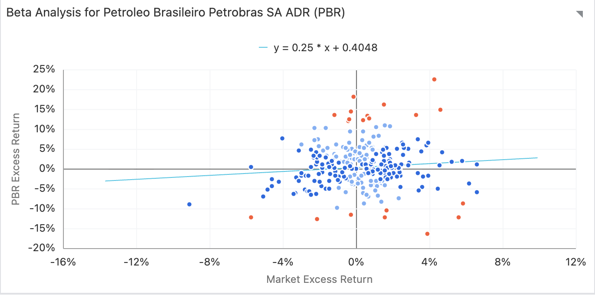

Cost of Capital.
Capital Structure and Market Risk Analysis
Capital Structure and Market Risk Analysis
The total enterprise value of the firm is $162.3B which represents the total value of the firm’s operations. The composition of this value represents the company has moved towards more conservative and sustainable funding mix. Currently the firm is 63.56% equity funded and 36.44% debt funded with a total cash reserve of $3.3B. Now the debt is more manageable showing a massive shift from the year 2015. This high level equity percentage shows the company can pay high dividend payouts without threatening its operational ability.
To determine the cost of equity (16.6%), we look how the market views Petrobras’s risk. The beta of 0.86 is a crucial insight, and it shows that Petrobras is less volatile than the average beta of 1.0 of the broader Brazilian market. This suggest that the pre-salt assets provide a stable foundation that resist some market instabilities.
"An alpha of one (the baseline value is zero) indicates that the return on the investment during a specified time frame outperformed the overall market average by 1%," according to the Corporate Finance Institute. An investment that is underperforming relative to the market average is indicated by a negative alpha number. (CFI Team, n.d.). Petrobras has surpassed the projected risky adjusted market average by 0.49% given its Alpha of 0.49%. The ultimate high cost of equity, adjusted for the Brazilian risk-free rate of 13.81%, reflects the market's anticipated return for Petrobras.

Petrobras Beta and Alpha performance against the broader market.
Petrobras’s ability to borrow money is anchored by its strong interest coverage ratio of 4.7x which means it earns five times the cash it needs for interest coverage. This strength earns the company a synthetic rating of A2/A allowing to borrow at a relatively low spread of 0.78% above the risk free rate. Also, the WACC for Petrobras is high which brings down the value of the company.
| Metric | Value |
|---|---|
| Market Value Parameters | |
| Stock Price | $14.12 |
| Shares Outstanding | 13B |
| Market Cap (E) | $184.2B |
| Firm Value Parameters | |
| Total Debt (D) | $59.2B |
| Cash (C) | $3.3B |
| Enterprise Value (V) | $162.3B |
| Capital Structure Weights | |
| Weight of Equity (We) | 63.56% |
| Weight of Debt (Wd) | 36.44% |
| Cost of Equity Metrics | |
| Cost of Equity (Ke) | 16.6% |
| Alpha | 0.49% |
| Beta | 0.86 |
| Risk Free Rate (Rf) | 13.81% |
| Cost of Debt Parameters | |
| Interest Expense | $2,316M |
| Pre-tax Cost of Debt | 3.91% |
| Interest Coverage Ratio | 4.7x |
| Synthetic Rating | A2/A |
| Default Spread | 0.78% |
| Synthetic Pre-Tax Cost of Debt | 14.59% |
| Effective Tax Rate | 34.00% |
| After-Tax Cost of Debt | 9.63% |